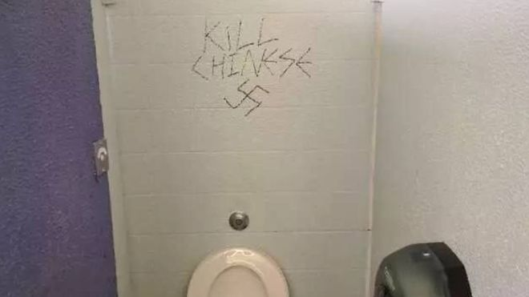
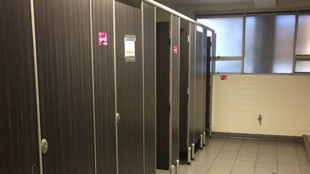

澳洲校园一月内再现辱华标语 根源何在
文章来源:http://www.bbc.com/zhongwen/simp/world-40810702
发稿日期:2017/8/3

悉尼大学校园内的争议性涂鸦，上有“杀掉中国人”的字眼和纳粹标志。 (SUPPLIED)
澳大利亚联邦政府属下的特别广播服务公司SBS（Special Broadcasting Service）报道称，悉尼大学开学第一天，
有学生在厕所墙壁上发现了"KILL CHINESE"（杀掉中国人） 的文字以及纳粹标志。
有学生称，在该校留学生活动室男厕所的墙壁上带有上述字样的涂鸦，并且还附带了象征纳粹的标志。这一涂鸦还出现在该校商学院大楼的洗手间内。
这两处地点经常有中国留学生经过。
悉尼大学学生会在其脸书以及官网针对该事件发布声明，称该校学生会不容忍任何形式的种族主义，并且已经迅速同校园保安清除了他们所发现的全部涂鸦。
他们还呼吁学生如果在校园任何地点看到这类涂鸦，要尽快通知校方。

发现涂鸦的洗手间(POPPY WANG)
悉尼大学校方发言人表示，尚不知道谁应该对此负责，但这看上去是个人行为。
这是一个月来澳大利亚校园发生的第二期辱华标语事件。上周，墨尔本大学、蒙纳士大学等学校校园出现"禁止中国学生进入，否则面临被起诉和驱逐出境"的海报，
引起华人社区高度关注，中国外交部发言人甚至对此作出回应。
7月25日，中国外交部发言人陆慷主持例行记者会时称，已注意到向相关报道并希望澳有关方面尽快妥善处理此事，切实维护中国在澳留学生的人身安全、尊严与合法权益。
墨尔本大学官方声明表示，学校将宣传单复印件和校园监控录像的图像提供给了警方，校方绝不容许仇视与偏执行为。
中国学联副主席："校方没有尽快行动"
悉尼大学中国学联副主席Poppy Wang接受BBC采访时称，这起涂鸦事件让自己感到不安。
她说，"和我谈及此事的大多数人都感到很悲哀。我们到这里学习，不应该受到这样的对待。"
"他们都很热爱这个国家（澳大利亚），真的不愿意再看到这种东西（辱华标语）。"
Poppy Wang表示，对于校方在发现该标语两天后才进行清除感到失望。"校方没有尽快采取行动"。
争议
目前校园海报事件当事人动机未明，但澳洲广播公司（ABC）皇牌电视时事节目《四角》6月份曾披露，有当地华人同中国侨民试图影响澳洲政坛。
堪培拉政府随即要求检查相关行为，同时防止外国政府干涉内政和法律。中国当时批评有关报道"毫无根据"，系"恶意炒作"。
到6月底，澳洲政府公布2016年人口普查结果显示，过去五年新移民最主要来源于中国大陆，中文普通话已成为澳大利亚第二大语言，中文广东话排第四。
本月1日，悉尼智库洛伊国际政策研究所（Lowy Institute for International Policy）的中国专家瓦拉尔（Merriden Varrall）在《纽约时报》撰文提到，
据说中国特工在监视中国学生，并报告那些不恪守共产党路线的人。另一个令人不安的趋势是，15万中国留学生中有很多正把支持北京的立场带入教室，扼杀辩论和开放性。
文章引用了堪培拉大学中国学生学者联合会会长卢露频的例子。卢露频表示，如果听说中国学生在组织反对北京的抗议活动，她会毫不犹豫地向中国大使馆的官员报告。